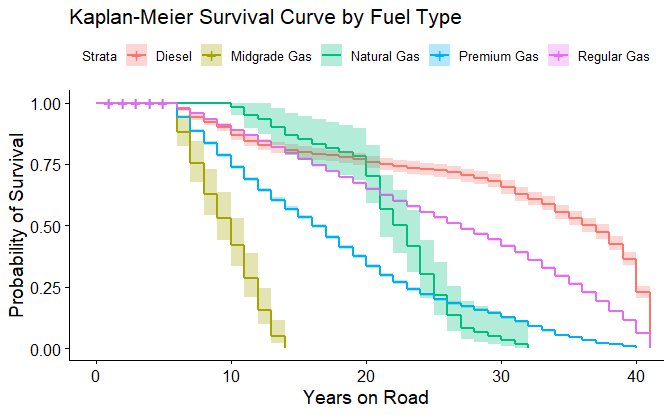
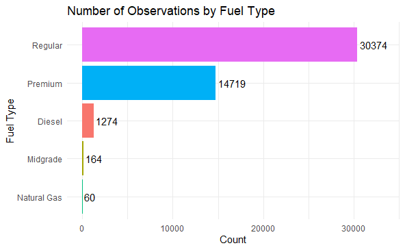

47,548EPA vehicle model records analyzed
1985-2024model years represented in the dataset
5fuel groups compared for lifespan patterns
Practical Use Brief Presentation
Using computing and engineering judgment to understand which vehicle designs tend to stay useful longer.
Kayle Megginson | WR 545 Project 2 | Based on Practical Use Brief Vehicle Longevity Project.
Why This Matters
Core Idea
The model lets both kinds of information count without pretending the newer vehicles are finished.
Method
EPA Fuel Economy data covering vehicle models from 1985 through 2024.
Group vehicles by fuel type and estimate vehicle age from model year.
Estimate which vehicle groups tend to stay on the road longer.
Turn patterns into design, cost, and lifecycle decisions.
Main Finding
The plot shows that the vehicle groups separate over time instead of following one shared lifespan pattern.

This curve shows the chance that vehicles in each fuel group remain on the road as they age.
After The Project
Use lifespan patterns to plan replacements before maintenance costs become unpredictable.
Compare durability, fuel efficiency, warranty risk, and long-term system performance.
Add mileage and maintenance data next to make the model stronger and more predictive.
My Contributions
I turned a large EPA dataset into variables that answered a lifespan question.
I used R to compare fuel groups and show how vehicle age patterns changed over time.
I connected the output to durability, lifecycle cost, replacement planning, and emissions tradeoffs.
I made the technical work understandable for engineering peers, managers, and non-specialists.
Career Direction
This project showed me how computing can help mechanical engineers make better decisions before systems reach the end of their useful life.
Conclusion

This visual shows which fuel groups have the strongest evidence base.